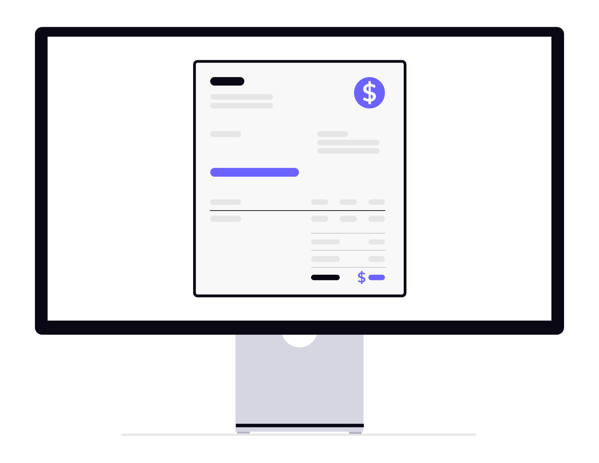

Bienvenido a mi sitio web
Esta es una página de Arnol Vera – ADSO
Ver másMisión y Visión

Nuestra Misión
Ayudar a los propietarios de vehículos a mantener sus documentos al día y sus finanzas bajo control, con recordatorios oportunos de SOAT y tecnomecánica y un registro claro de los gastos del vehículo, para evitar multas y sorpresas.
Nuestra Visión
Ser, en los próximos 5 años, la aplicación de referencia en Colombia para la gestión integral del vehículo, reconocida por su confiabilidad, su facilidad de uso y por ayudar a los conductores a ahorrar dinero y tiempo.
Nuestros Servicios y Precios

ALERTAS
Alertas de vencimiento de SOAT y tecnomecánica (notificación, correo o WhatsApp).
• Registro de gastos: combustible, mantenimiento, peajes, parqueadero y seguros.
• Reportes y gráficos de gasto mensual por vehículo.
• Gestión de varios vehículos en una misma cuenta.
• Historial de mantenimientos y próximos servicios.
Planes y Tarifas
Gratis: 1 vehículo, alertas básicas de SOAT y tecnomecánica, registro simple de gastos.
Premium ($7.900 a $9.900 al mes): varios vehículos, alertas por varios canales, reportes y gráficos, historial de mantenimiento.
Plan flotas o familiar ($19.900 a $29.900 al mes): más vehículos y varios usuarios.
Pago anual con descuento: 2 meses gratis.

Servicios adicionales
Alertas de más documentos: licencia de conducción, impuesto vehicular y seguro todo riesgo.
Recordatorios de mantenimiento: cambio de aceite, llantas, frenos y batería.
Almacén de documentos: fotos o PDF de la tarjeta de propiedad, SOAT y facturas.